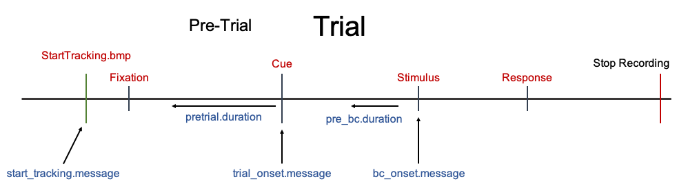

pupil_preprocess() is a wrapper around the other functions to allow full preprocessing of raw pupil data using a single function.
Using this method, you will need to pass many arguments to the pupil_preprocess() function that specifies all the details and preprocessing options.
pupil_preprocess() will be performed on an entire import_dir directory of raw data files that match a certain pattern in their filename. The preprocessed data will be saved to a specified output_dir directory.
The overall workflow of pupil_preprocess() is:
Read in raw data files pupil_read()
tracking_file is supplied will also add message markers to the dataClean up raw data files and more
Set Timing variable to be relative to onset of each trial. set_timing()
Correlate left and right pupil size (if both eyes were recorded from). pupil_cor()
Select either left or right pupil data (if both eyes were recorded from). select_eye()
Deblink data. pupil_deblink()
Smooth (if specified). pupil_smooth()
Interpolate (if specified). pupil_interpolate()
Baseline Correct (if specified). pupil_baselinecorrect()
Remove trials with too much Missing Data. pupil_missing()
Merges files into a single merged file (if specified). pupil_merge()
A final preprocessed data file will be saved for every original raw data file.
If output_steps == TRUE a data file will be saved after steps 3, 4, and 5. Before saving the data file at each of these steps, the final two steps 6 and 7 are performed. This results in baseline corrected and missing data removed files before each major preprocessing step. This is obviously not necessary and so output_steps = FALSE is the default and will only save one final preprocessed data file per subject. Saving a data file after each preprocessing steps would allow you to analyze your data at different stages to assess the influence of the preprocessing methods you chose.
You will need to supply message markers to correctly preprocess your data. This image is a representation of what the message markers start_tracking.message, trial_onset.message, and bc_onset.message correspond to. For further detail see Example Data Set and Message Markers Articles.

You can copy and paste the following code into a script and use it as a template.
## Preprocessing parameters # File Import Information import_dir <- "data/Raw" pattern <- ".txt" taskname <- "Attention_Task" timing_file <- NULL # Eye trackers save the subject number information in different ways and is not # always easy to obtain. For SMI Red250m eye trackers this is extracted from the # datafile name. For SR-Research Eyelink1000 eye trackers this is extracted from # the column name with the subject ID. For SMI eye trackers you MUST identify a # unique subj_prefix pattern and subj_suffix pattern that surrounds the # subject # in the datafile name/subject ID column. subj_prefix <- "n_" subj_suffix <- "-" # File Output Information output_dir <- "data/Preprocessed" output_steps <- FALSE files_merge <- FALSE # Eye tracker Information eyetracker <- "smi" hz <- 250 eye_use <- "left" px_to_mm.conversion <- NULL # Message Marker Information start_tracking.message <- "StartTracking.bmp" start_tracking.match <- "exact" trial_onset.message <- "Cue" trial_onset.match <- "exact" pretrial.duration <- 1000 bc_onset.message <- "Stimulus" bc_onset.match <- "exact" # Preprocessing Options deblink_extend <- 100 smooth <- "hann" smooth.window <- 500 interpolate <- "linear" interpolate.maxgap <- 750 method_first <- "smooth" bc <- "subtractive" pre_bc.duration <- 200 missing_allowed <- .30 # Misc. include_col <- NULL trial_exclude <- NULL ############################ pupil_preprocess(import_dir = import_dir, pattern = pattern, taskname = taskname, subj_prefix = subj_prefix, subj_suffix = subj_suffix, timing_file = timing_file, output_dir = output_dir, output_steps = output_steps, files_merge = files_merge, eyetracker = eyetracker, hz = hz, eye_use = eye_use, px_to_mm.conversion = px_to_mm.conversion, start_tracking.message = start_tracking.message, start_tracking.match = start_tracking.match, trial_onset.message = trial_onset.message, trial_onset.match = trial_onset.match, pretrial.duration = pretrial.duration, bc_onset.message = bc_onset.message, bc_onset.match = bc_onset.match, deblink_extend = deblink_extend, smooth = smooth, smooth.window = smooth.window, interpolate = interpolate, interpolate.maxgap = interpolate.maxgap, method_first = method_first, bc = bc, pre_bc.duration = pre_bc.duration, missing_allowed = missing_allowed, include_col = include_col, trial_exclude = trial_exclude)
For any of the parameters that do not apply to your data or preprocessing steps, then you can just set them to NULL (e.g. timing_file <- NULL)